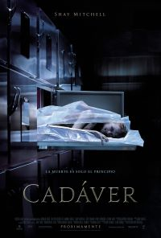
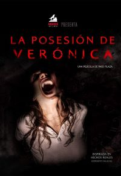
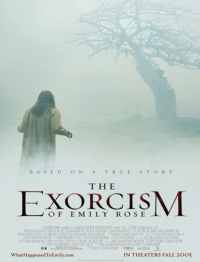

.png)
Los ojos de julia

| Estreno | 20 de octubre de 2010 (España) |
| Duración | 117 minutos |
| Protagonistas | Belén Rueda, Lluís Homar,Pablo Derqui,Francesc Orella,Joan Dalmau,Julia Gutiérrez Caba, Boris Ruiz, Daniel Grao,Pere Ventura,Oscar Foronda,Clara Segura,Betsy Túrnez,Daniel Ortiz. |
| Producción | Joaquín Padró, Guillermo del Toro, Mar Targarona |
Sinopsis:
Julia recibe la noticia de la inesperada muerte de su hermana, Sara. Todos los hechos apuntan a que se trata claramente de un suicidio. A pesar de todo, Julia es incapaz de aceptar esta versión y empieza a investigar las circunstancias que rodeaban la vida de su hermana, a la que no visitaba desde hacía unos meses.
Pero algunos inquietantes indicios, que contradicen el carácter de Sara, y el descubrimiento de que su hermana se había apartado completamente de sus vecinos y amigos sólo hacen aumentar en ella las sospechas de que algo extraño se oculta tras su muerte.
La obsesión de Julia por seguir sus últimos pasos en vida la conducen a cruzarse con una amenaza misteriosa que nadie más en su entorno parece percibir, ni siquiera su marido, Isaac. Julia debe enfrentarse a este peligro desconocido superando además una trágica adversidad: una enfermedad genética degenerativa que le provoca la pérdida progresiva de su visión.
Aunque durante estos últimos años la complicidad y el amor entre Isaac y Julia han podido mantener alejados los ataques de ceguera de ella, una serie de extraños acontecimientos cada vez más agresivos hace que estos virulentos ataques amenacen con volver y sumergir a la mujer en un mundo de oscuridad, indefensa, a merced de la terrorífica presencia que se oculta en ella.
Información obtenida de:LaHiguera.net
Cadáver
| Estreno | 30 de noviembre de 2018 (EUA) |
| Duración | 86 minutos |
| Protagonistas | Shay Mitchell, Grey Damon,Kirby Johnson, Nick Thune, Louis Herthum, Stana Katic, Jacob Ming-Trent, James A. Watson Jr., Marianne Bayard, Adrian M. Mompoint, Gijs Scholten van Aschat,Guy Clemens, Andrea Lyman,George J. Vezina, Melissa McMeekin, Lexie Roth, David Pridemore,Robert J. La Trémouille,Kevin Butler,JP Valenti, Alan Francis Sullivan, Manny Famolare. |
| Producción | Todd Garner, Sean Robins |
Sinopsis:
Un espeluznante exorcismo se descontrola por completo y se cobra la vida de una adolescente. Meses después, la ex policía Megan Reed (Shay Mitchell) intenta rehacer su vida después de que no lograra evitar la muerte de su compañero y de recurrir a las drogas y el alcohol para sobrellevar su dolor. Megan, que trabaja en el turno de noche del depósito de cadáveres del hospital de Boston en el que consiguió superar su adicción, encuentra una insospechada paz en la extrema soledad del tenebroso lugar.
Pero, una noche, después de recibir un cuerpo horriblemente desfigurado, las cosas empiezan a cambiar. Encerrada en los pasillos del sótano del depósito con el cadáver mutilado, Megan empieza a sufrir visiones horripilantes, que la llevan a cuestionarse su propia cordura y a temer que el cadáver esté poseído por una implacable fuerza demoníaca, que está lista para volver a la vida... para matar.
Información obtenida de:LaHiguera.net
The Boy

| Estreno | 22 de enero de 2016 |
| Duración | 97 minutos |
| Protagonistas | Lauren Cohan,Rupert Evans, James Russell, Jim Norton, Diana Hardcastle, Ben Robson, Jett Klyne, Lily Pater, Matthew Walker, Stephanie Lemelin. |
| Producción | Matt Berenson, Roy Lee, Gary Lucchesi, Tom Rosenberg, Jim Wedaa |
Sinopsis:
Una joven mujer llamada Greta (Lauren Cohan) llega a trabajar a un pueblo del Reino Unido. Allí se encuentra en una casa antigua de tipo campestre, donde parece no haber nadie por lo que se decide a inspeccionar la casa. En el salón se encuentra un retrato familiar donde se aprecia a los dueños de casa, los Heelshire y su pequeño hijo, de no más de ocho años de edad.
Al llegar a la cocina se asusta al encontrarse con un hombre de su edad, quien se presenta como Malcolm (Rupert Evans), el hombre que trae el pedido del pueblo una vez a la semana y poco después se encuentra con los propietarios de la casa: el señor (Jim Norton) y la señora (Diana Hardcastle) Heelshire, quienes le muestran la casa y le comentan que cada vez que vengan a traer su pedido, será a Malcolm quien lo haga.
Luego proceden a presentarle a su hijo, Brahms, pero al girar la silla donde el pequeño está sentado, Greta descubre que el niño es un muñeco de porcelana. A pesar de que al comienzo piensa que todo es una broma, poco a poco se da cuenta de que los Heelshire de verdad ven al muñeco como su hijo.
Información obtenida de:EcuRed
La posesión de Verónica
| Estreno | 25 de agosto de 2017(España) |
| Duración | 105 minutos |
| Protagonistas | Sandra Escacena,Bruna González, Claudia Placer, Iván Chavero, Ana Torrent, Consuelo Trujillo, Ángela Fabián, Carla Campra, Chema Adeva, Luis Rallo Luis Rallo, Carlos Cristino, Núria Gago, Sonia Almarcha, Maru Valdivielso,Leticia Dolera . |
| Producción | Enrique López Lavigne, María Angulo, Mar Ilundain |
Sinopsis:
En los años 90, en pleno Madrid, una adolescente que acaba de realizar la Ouija con sus amigas tiene que hacer frente a las consecuencias de lo que ha desencadenado, pues ha comenzado a ser perseguida por presencias sobrenaturales que la amenazan con dañar a los miembros de su familia. El director de la trilogía española "[Rec]", Paco Plaza, es el encargado de dirigir esta película de terror cuyo guion ha escrito Fernando Navarro ("Toro"). El reparto principal del filme está formado por la debutante Sandra Escacena y Ana Torrent ("Tesis"), entre otros. También participa Leticia Dolera ("Requisitos para ser una persona normal"). Es la segunda ocasión que Dolerá actúa bajo las órdenes de Plaza después de protagonizar "[Rec]³: Génesis" (2012). La cinta "Verónica" se basa en una historia real conocida con el nombre "expediente Vallecas" y que sucedió en 1992, cuando una adolescente falleció en extrañas circunstancias que la policía describió como "una situación de misterio y rareza". También añade datos de "caso Embajadores", asociado con una presencia que arañaba a los habitantes de una casa en este barrio madrileño mientras dormían.
Información obtenida de:EcuRed
El exorcismo de emily rose
| Estreno | 11 de noviembre de 2005 (México) |
| Duración | 121 minutos |
| Protagonistas | Laura Linney,Tom Wilkinson, Campbell Scott, Jennifer Carpenter, Colm Feore, Joshua Close, Kenneth Welsh, Duncan Fraser, JR Bourne, Mary Beth Hurt,Henry Czerny, Shohreh Aghdashloo, Mary Black, Julian Christopher, Aaron Douglas,Lorena Gale, Taylor Hill, Chelah Horsdal, John Innes, Michael Jonsson, Katie Keating, Terence Kelly, Darrin Maharaj, Ryan McDonald, Marilyn Norry, Marsha Regis, Bobby Stewart, Clay St. Thomas, Cory Lee, Andrew Wheeler. |
| Producción | Tom Rosenberg, Paul Harris Boardman, Gary Lucchesi, Tripp Vinson, Beau Flynn |
Sinopsis:
Narra la historia de una joven que enferma desesperada e inexplicablemente. Emily Rose sufre visiones aterradoras y soporta atroces convulsiones que le dejan el cuerpo deformado y débil. Un neurólogo le diagnosticó epilepsia; sin embargo, la medicación que le receta resulta ineficaz. Los síntomas que padece empeoran y un segundo diagnóstico, realizado por un psicólogo, afirma que Emily no sólo es epiléptica, sino también psicótica.
Cuando su sufrimiento deviene insoportable y los tratamientos médicos no logran aliviarla, Emily pide ayuda al cura de su parroquia. Tras una larga y profunda meditación, el Padre Moore acepta realizar un exorcismo, algo que nunca ha hecho. Emily y el Padre Moore depositan toda su confianza en su religión, que ofrece una interpretación de la enfermedad de Emily: los demonios se han apoderado de su mente y su cuerpo y son la causa de su implacable tormento.
A pesar de los heroicos esfuerzos del Padre Moore, Emily muere durante el exorcismo y, como consecuencia de esto, acusan al sacerdote de homicidio negligente por no conseguir asistencia médica. El juicio consiguiente enfrenta razón y ciencia con creencias espirituales y fe, y nos remonta al pasado a través de lo que le acontece a Emily durante la degeneración vertiginosa de su enfermedad, al tiempo que nos ofrece las interpretaciones de las dos partes en desacuerdo.
Información obtenida de:LaHiguera.net